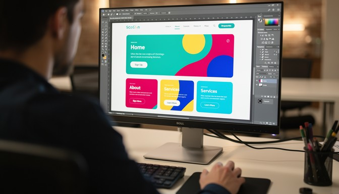

Welcome to My Website
Welcome to my website. This page was created using HTML5 and CSS to practice responsive web design. The website is designed to work on both mobile devices and larger screens.
I am learning how to create websites using HTML and CSS. Responsive design allows a website to adjust to different screen sizes, making it easier for visitors to use.

Web development is an important skill because websites are used for communication, education, business, entertainment, and many other purposes.